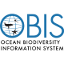

Have you ever wondered how scientists can track the animal migration path or determine whether an area needs to be protected or not? Or how do we evaluate biodiversity well being, richness or damages? All the techniques used in order to find answers to all of this is part of the geospatial biodiversity conservation.
So what is geospatial biodiversity conservation? For short, it is an innovative and essential approach to conservation that utilises the power of geospatial technology to protect our natural world. It uses satellite imagery, remote sensing techniques, GIS and other tools for collecting and analysing the data for biodiversity and ecosystems.Geospatial biodiversity conservation provides a means to better understand and protect the biodiversity that we have left.
Case studies
Technical skills
As a geospatial biodiversity expert, it is important to have a diverse range of technical skills to effectively work towards the goal of conservation. Some of the most important technical skills required in this field include GIS (Geographic Information System), remote sensing, data management, database design, and programming languages.
GIS and spatial analysis
GIS is an essential tool for geospatial biodiversity conservation. It allows experts to analyze spatial data and create detailed maps to better understand the distribution and abundance of plant and animal species. This involves the ability to analyze spatial data and identify patterns or relationships between different variables. To work effectively in this field, it is crucial to have a strong understanding of GIS software such as ArcGIS, QGIS, or ENVI.
Remote sensing
Remote sensing is another key skill that is necessary for geospatial biodiversity conservation. It involves the use of satellite imagery and aerial photography to gather data about the earth's surface. This data can be used to monitor changes in land cover, detect the presence of invasive species, and identify areas of high biodiversity. Familiarity with remote sensing software such as ERDAS Imagine, ENVI, or Google Earth Engine is necessary to work effectively in this field.
Data management and database design
Data management and database design skills are also important for geospatial biodiversity experts. The ability to effectively manage and organize large datasets is crucial for making informed decisions about conservation management. Familiarity with database management software such as SQL or Oracle, and data processing software such as Excel or Access can be beneficial for managing large datasets.
Programming languages
Programming languages such as Python, R, or Java are also important for geospatial biodiversity experts. These languages allow experts to automate repetitive tasks and analyze large datasets efficiently. A strong foundation in programming is essential for processing and managing large amounts of data that are common in geospatial biodiversity conservation.
Web technologies
Web technologies are crucial in nowdays GIS domain. They allow both processing and presentation in attractive and interactive way. What's more they are very accesible as they are ready to use in a browser, so non-technical users can also take advantage of them.
Soft skills
Soft skills are essential for anyone working in geospatial biodiversity conservation. These skills are just as important as technical skills and can make the difference between success and failure in this field. In this section, we will explore some of the key soft skills that geospatial biodiversity experts need and some training recommendations to improve these skills. Experts should continuously invest in attending relevant workshops, training programs, and courses to develop and improve these skills.
Communication Skills
Effective communication is crucial for geospatial biodiversity experts to convey scientific information to various stakeholders, including policymakers, scientists, and the public. It also helps in writing reports, proposals, and scientific papers that are accessible to a wide audience. Experts should attend workshops or courses on technical writing, scientific communication, and public speaking to improve communication skills.
Collaboration Skills
short description
Managing Agile Teamsshort description
Geospatial biodiversity experts often work in multidisciplinary teams, and effective collaboration is crucial for project success. They must be willing to work with others, build relationships, and communicate effectively. Collaboration skills can be enhanced by attending team-building workshops, learning to give and receive feedback, and developing conflict resolution skills.
Leadership Skills
Effective leadership is essential for geospatial biodiversity experts to inspire and motivate their team members towards a common goal. Leaders should have a clear vision, be able to delegate responsibilities, and communicate expectations effectively. To enhance leadership skills, one can attend leadership development programs, workshops on team management, and mentorship programs.

Project Management Skills
Geospatial biodiversity conservation projects can be complex, and experts must be able to manage multiple tasks simultaneously. Effective project management skills include the ability to prioritize tasks, set deadlines, and delegate responsibilities. For developing these skills, it is recommended to attend workshops or training programs on project management, time management, and organizational skills to improve their abilities.
Flexibility and Adaptability
Conservation is a constantly evolving field, and experts must be able to adapt to changes in technology, policy, and environmental conditions. They should be willing to think outside the box, find innovative solutions, and remain flexible. Experts can enhance their flexibility and adaptability by attending training programs on creative problem-solving, risk management, and change management.
Data repositories
short description
Global Biodiversity Information Facilityshort description
Map of Lifeshort description
UN Biodiversity Labshort description
Living Planet Indexshort description
IUCN Red Listshort description
 Wildlife Insights
Wildlife Insights
short description
Movebankshort description
 Ocean Biodiversity Information Systemshort description
Biodiversity Information System For Europeshort description
 The Nature Conservancy - Geospatial Conservation Atlas
The Nature Conservancy - Geospatial Conservation Atlas
short description
Protected Planetshort description
Conclusion
Geospatial biodiversity conservation is a critical approach to protecting our natural world. By utilising geospatial technology to collect and analyse data, we can gain a better understanding of the biodiversity that we have left and develop effective conservation strategies. However, there are many challenges that must be overcome to make geospatial biodiversity conservation a success. One of the most significant challenges is the lack of data on many species and ecosystems. This makes it difficult to determine the most effective conservation strategies. Additionally, conservation efforts can be hindered by a lack of funding and political will. As a global community, we must work together to promote and fund geospatial biodiversity conservation efforts to protect our planet for future generations.